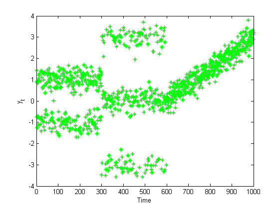
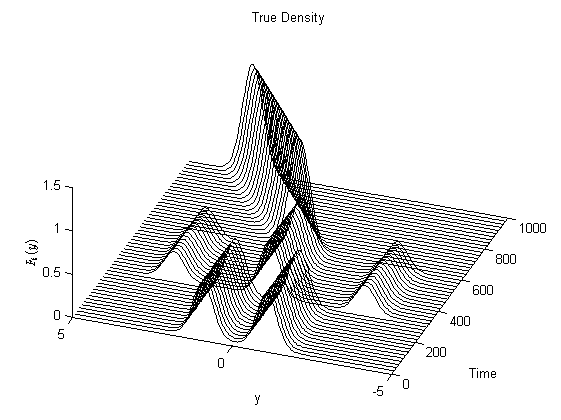
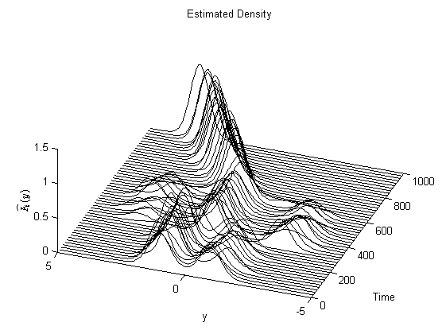

Matbiips example: Dynamic density estimation
In this example, we consider the (parametric version) of the dynamic Chinese restaurant process derived in the reference below.
Reference: F. Caron, M. Davy, A. Doucet. Generalized Polya Urn for Time-Varying Dirichlet Process Mixtures. Uncertainty in Artificial Intelligence, 2007.
http://arxiv.org/ftp/arxiv/papers/1206/1206.5254.pdf
Contents
Statistical model in BUGS language
Content of the file `tvdp.bug':
var c[t_max, clust_max],mu[t_max, clust_max],mu_y[t_max], m[t_max, clust_max],m_up[t_max, clust_max], p[t_max,clust_max],y[t_max,1]
model
{
m[1,1] <- 1
c[1,1] <- 1
for (i in 2:clust_max)
{
m[1,i] <- 0
c[1,i] <- 0
}
for (i in 1:clust_max)
{
mu[1,i] ~ dnorm(mu_0, prec_0)
}
y[1,1] ~ dnorm(mu[1,1], prec_y)
for (t in 2:t_max)
{
for (i in 1:clust_max)
{
m_up[t-1,i] ~ dbinom(rho, m[t-1,i])
}
p[t,] <- (m_up[t-1,] + alpha/clust_max)/(sum(m_up[t-1,])+alpha)
c[t,] ~ dmulti(p[t,], 1)
m[t,] <- m_up[t-1,] + c[t,] # Cluster evolution
for (i in 1:clust_max)
{
mu[t,i] ~ dnorm(gamma * mu[t-1,i] + (1-gamma)*mu_0, 1/(1-gamma^2)*prec_0)
}mu_y[t] <- sum(c[t,]*mu[t,])
y[t,1] ~ dnorm(mu_y[t], prec_y)
}
}Installation of Matbiips
Unzip the Matbiips archive in some folder and add the Matbiips folder to the Matlab path
matbiips_path = '..\..\matbiips\matlab';
addpath(matbiips_path)
Load model and sample data
Model parameters
clust_max = 10; t_max = 1000; mu_0 = 0; prec_0 = 1; prec_y = 10; alpha = 3; rho = .99; gamma = .99;
Sample and plot data
y = zeros(t_max, 1); y(1:300) = sqrt(1/prec_y)*randn(300, 1) + 2*(rand(300, 1)>0.4) -1; u = rand(300, 1); y(301:600) = sqrt(1/prec_y)*randn(300, 1) + 3*(u>0.25) + 3*(u>0.75) -3; mov_mean = linspace(0,3,400); y(601:1000) = sqrt(1/prec_y)*randn(400, 1) + repmat(mov_mean', 1, 1); figure plot(y, '*g') xlabel('Time') ylabel('y_t')
Start BiiPS console
biips_init;
Compile BUGS model
data = {'rho', 'gamma', 't_max', 'clust_max', 'y', 'mu_0', 'prec_0', 'prec_y', 'alpha'};
model = 'tvdp.bug'; % BUGS model filename
[model_id, data] = biips_model(model, data); % Create biips model
* Parsing model in: tvdp.bug * Compiling model graph Declaring variables Resolving undeclared variables Allocating nodes Graph size: 60977
BiiPS Sequential Monte Carlo
Parameters of the SMC algorithm
n_part = 1000; % Number of particles variables = {'c', 'mu', 'm'}; % Variables to be monitored
Run SMC
out_smc = biips_smc_samples(model_id, variables, n_part);
* Assigning node samplers * Running SMC forward sampler with 1000 particles |--------------------------------------------------| 100% |**************************************************| 20989 iterations in 229.01 s
Plot the true and estimated densities over time
stepsize = 20; n0 = 200; x0 = linspace(-5,5,n0); out = zeros(t_max, n0); out_true = zeros(t_max, n0); for t=stepsize:stepsize:t_max for i=1:n_part c_i = logical(out_smc.c.f.values(t, :, i)); mu_i = out_smc.mu.f.values(t, :, i); m_i = out_smc.m.f.values(t, :, i); w_i = out_smc.mu.f.weights(t,1,i); out(t, :) = out(t, :) ... + w_i*sum( repmat(m_i', 1, n0).*normpdf(repmat(x0, clust_max, 1),... repmat(mu_i', 1, n0), 1/sqrt(prec_y)))/sum(m_i); end if t<301 out_true(t,:) = .5*normpdf(x0, 1, 1/sqrt(prec_y)) + .5*normpdf(x0, -1, 1/sqrt(prec_y)); elseif (t>300 && t<=600) out_true(t,:) = .25*normpdf(x0, -3, 1/sqrt(prec_y)) ... + .25*normpdf(x0, 3, 1/sqrt(prec_y)) + .5*normpdf(x0, 0, 1/sqrt(prec_y)); else out_true(t,:) = normpdf(x0, mov_mean(t-600), 1/sqrt(prec_y)); end end % True density figure for t=stepsize:stepsize:t_max line(t*ones(length(x0),1), x0, out_true(t, :), 'color', 'k') hold on end view(-70,52) xlabel('Time') ylabel('y') zlabel('$F_t(y)$', 'interpreter', 'latex') title('True Density') % Estimated density figure for t=stepsize:stepsize:t_max line(t*ones(length(x0),1), x0, out(t, :), 'color', 'k') hold on end view(-70,52) xlabel('Time') ylabel('y') zlabel('$\widehat F_t(y)$', 'interpreter', 'latex') title('Estimated Density') 